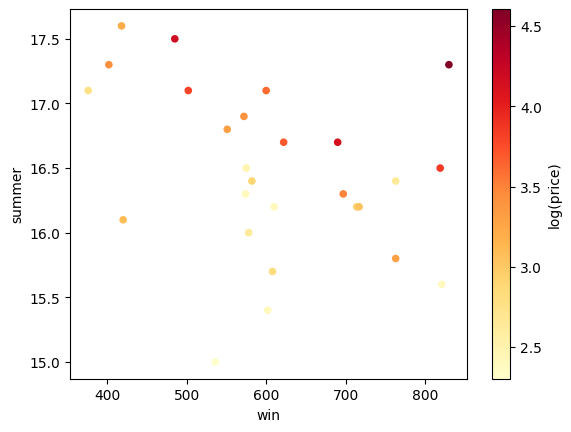
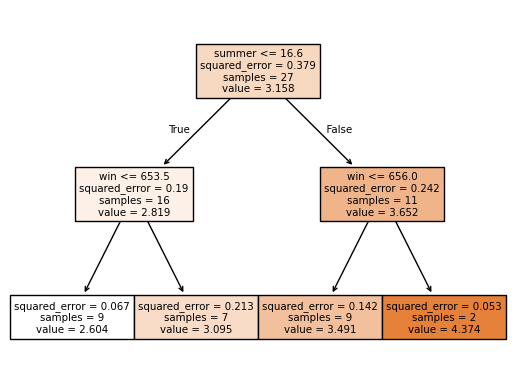
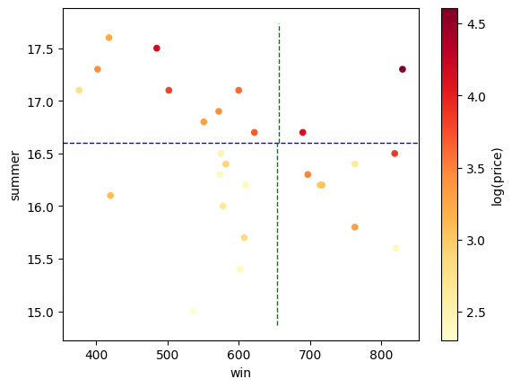
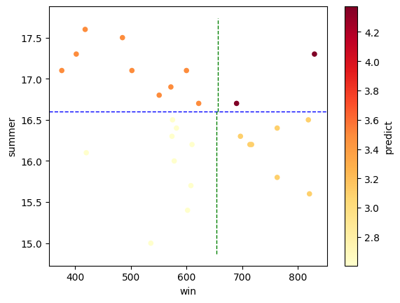
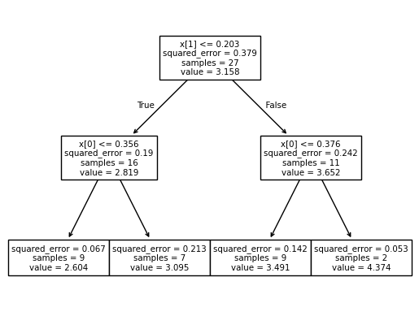
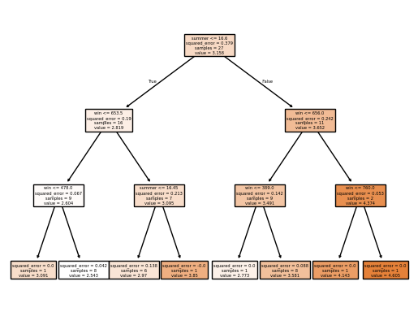
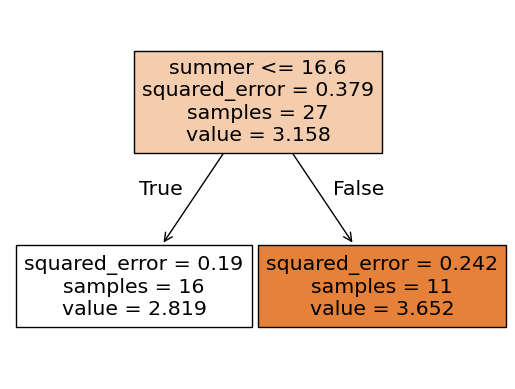

import pandas as pd
import numpy as np
from sklearn.pipeline import Pipeline
from sklearn.compose import make_column_selector, ColumnTransformer
from sklearn.preprocessing import StandardScaler, OneHotEncoder, PolynomialFeatures
from sklearn.tree import DecisionTreeRegressor
from sklearn.metrics import r2_scoreDecision Trees for Regression
We’ll use a data set for predicting the quality (log-price) of Bordeaux wines.
data_dir = "https://dlsun.github.io/pods/data/"
bordeaux_df = pd.read_csv(data_dir + "bordeaux.csv",
index_col="year")
# Split the data into training and test sets.
bordeaux_train = bordeaux_df.loc[:1980].copy()
bordeaux_test = bordeaux_df.loc[1981:].copy()
# Log transform the target.
bordeaux_train["log(price)"] = np.log(bordeaux_train["price"])
bordeaux_train.head()| price | summer | har | sep | win | age | log(price) | |
|---|---|---|---|---|---|---|---|
| year | |||||||
| 1952 | 37.0 | 17.1 | 160 | 14.3 | 600 | 40 | 3.610918 |
| 1953 | 63.0 | 16.7 | 80 | 17.3 | 690 | 39 | 4.143135 |
| 1955 | 45.0 | 17.1 | 130 | 16.8 | 502 | 37 | 3.806662 |
| 1957 | 22.0 | 16.1 | 110 | 16.2 | 420 | 35 | 3.091042 |
| 1958 | 18.0 | 16.4 | 187 | 19.1 | 582 | 34 | 2.890372 |
Let’s focus on just two predictors for now: winter rainfall (win) and average summer temperature (summer). Let’s plot the training data, using a color gradient to represent the target (log(price)).
import matplotlib.cm as cm
bordeaux_train.plot.scatter(x="win", y="summer", c="log(price)",
cmap=cm.YlOrRd);
Decision trees in scikit-learn
X_train = bordeaux_train[["win", "summer"]]
y_train = bordeaux_train["log(price)"]dt = DecisionTreeRegressor(max_depth=2)
dtDecisionTreeRegressor(max_depth=2)In a Jupyter environment, please rerun this cell to show the HTML representation or trust the notebook.
On GitHub, the HTML representation is unable to render, please try loading this page with nbviewer.org.
DecisionTreeRegressor(max_depth=2)
dt.fit(X_train, y_train)DecisionTreeRegressor(max_depth=2)In a Jupyter environment, please rerun this cell to show the HTML representation or trust the notebook.
On GitHub, the HTML representation is unable to render, please try loading this page with nbviewer.org.
DecisionTreeRegressor(max_depth=2)
dt.predict(X_train)array([3.49095562, 4.37415246, 3.49095562, 2.60387361, 2.60387361,
3.49095562, 3.09548658, 4.37415246, 3.09548658, 2.60387361,
3.49095562, 2.60387361, 3.09548658, 3.09548658, 2.60387361,
2.60387361, 3.49095562, 3.49095562, 2.60387361, 3.49095562,
2.60387361, 3.49095562, 3.49095562, 3.09548658, 3.09548658,
3.09548658, 2.60387361])from sklearn.tree import plot_tree
plot_tree(dt)[Text(0.5, 0.8333333333333334, 'x[1] <= 16.6\nsquared_error = 0.379\nsamples = 27\nvalue = 3.158'),
Text(0.25, 0.5, 'x[0] <= 653.5\nsquared_error = 0.19\nsamples = 16\nvalue = 2.819'),
Text(0.375, 0.6666666666666667, 'True '),
Text(0.125, 0.16666666666666666, 'squared_error = 0.067\nsamples = 9\nvalue = 2.604'),
Text(0.375, 0.16666666666666666, 'squared_error = 0.213\nsamples = 7\nvalue = 3.095'),
Text(0.75, 0.5, 'x[0] <= 656.0\nsquared_error = 0.242\nsamples = 11\nvalue = 3.652'),
Text(0.625, 0.6666666666666667, ' False'),
Text(0.625, 0.16666666666666666, 'squared_error = 0.142\nsamples = 9\nvalue = 3.491'),
Text(0.875, 0.16666666666666666, 'squared_error = 0.053\nsamples = 2\nvalue = 4.374')]plot_tree(dt, feature_names=["win", "summer"], filled=True)[Text(0.5, 0.8333333333333334, 'summer <= 16.6\nsquared_error = 0.379\nsamples = 27\nvalue = 3.158'),
Text(0.25, 0.5, 'win <= 653.5\nsquared_error = 0.19\nsamples = 16\nvalue = 2.819'),
Text(0.375, 0.6666666666666667, 'True '),
Text(0.125, 0.16666666666666666, 'squared_error = 0.067\nsamples = 9\nvalue = 2.604'),
Text(0.375, 0.16666666666666666, 'squared_error = 0.213\nsamples = 7\nvalue = 3.095'),
Text(0.75, 0.5, 'win <= 656.0\nsquared_error = 0.242\nsamples = 11\nvalue = 3.652'),
Text(0.625, 0.6666666666666667, ' False'),
Text(0.625, 0.16666666666666666, 'squared_error = 0.142\nsamples = 9\nvalue = 3.491'),
Text(0.875, 0.16666666666666666, 'squared_error = 0.053\nsamples = 2\nvalue = 4.374')]
import matplotlib.pyplot as plt
ax = bordeaux_train.plot.scatter(
x="win",
y="summer",
c="log(price)",
cmap=cm.YlOrRd
)
# Horizontal line at y = 16.6
plt.axhline(y=16.6, color='blue', linestyle='--', linewidth=1)
# Vertical line at x = 653.5 (from y=0 to y=16.6)
plt.vlines(x=653.5, ymin=ax.get_ylim()[0], ymax=16.6, color='green', linestyle='--', linewidth=1)
# Vertical line at x = 656 (from y=16.6 to top of plot)
plt.vlines(x=656, ymin=16.6, ymax=ax.get_ylim()[1], color='green', linestyle='--', linewidth=1)

bordeaux_train["predict"] = dt.predict(X_train)
ax = bordeaux_train.plot.scatter(
x="win",
y="summer",
c="predict",
cmap=cm.YlOrRd
)
# Horizontal line at y = 16.6
plt.axhline(y=16.6, color='blue', linestyle='--', linewidth=1)
# Vertical line at x = 653.5 (from y=0 to y=16.6)
plt.vlines(x=653.5, ymin=ax.get_ylim()[0], ymax=16.6, color='green', linestyle='--', linewidth=1)
# Vertical line at x = 656 (from y=16.6 to top of plot)
plt.vlines(x=656, ymin=16.6, ymax=ax.get_ylim()[1], color='green', linestyle='--', linewidth=1)
dt_pipeline = Pipeline(
[("standardize", StandardScaler()),
("decision_tree", DecisionTreeRegressor(max_depth=2))]
)
dt_pipelinePipeline(steps=[('standardize', StandardScaler()),
('decision_tree', DecisionTreeRegressor(max_depth=2))])In a Jupyter environment, please rerun this cell to show the HTML representation or trust the notebook. On GitHub, the HTML representation is unable to render, please try loading this page with nbviewer.org.
Pipeline(steps=[('standardize', StandardScaler()),
('decision_tree', DecisionTreeRegressor(max_depth=2))])StandardScaler()
DecisionTreeRegressor(max_depth=2)
dt_pipeline.fit(X=X_train, y=y_train)Pipeline(steps=[('standardize', StandardScaler()),
('decision_tree', DecisionTreeRegressor(max_depth=2))])In a Jupyter environment, please rerun this cell to show the HTML representation or trust the notebook. On GitHub, the HTML representation is unable to render, please try loading this page with nbviewer.org.
Pipeline(steps=[('standardize', StandardScaler()),
('decision_tree', DecisionTreeRegressor(max_depth=2))])StandardScaler()
DecisionTreeRegressor(max_depth=2)
dt_pipeline.predict(X=X_train)array([3.49095562, 4.37415246, 3.49095562, 2.60387361, 2.60387361,
3.49095562, 3.09548658, 4.37415246, 3.09548658, 2.60387361,
3.49095562, 2.60387361, 3.09548658, 3.09548658, 2.60387361,
2.60387361, 3.49095562, 3.49095562, 2.60387361, 3.49095562,
2.60387361, 3.49095562, 3.49095562, 3.09548658, 3.09548658,
3.09548658, 2.60387361]) # Access the Decision Tree estimator by its name in the pipeline
decision_tree_estimator = dt_pipeline.named_steps['decision_tree']
# Plot the decision tree
plot_tree(decision_tree_estimator)[Text(0.5, 0.8333333333333334, 'x[1] <= 0.203\nsquared_error = 0.379\nsamples = 27\nvalue = 3.158'),
Text(0.25, 0.5, 'x[0] <= 0.356\nsquared_error = 0.19\nsamples = 16\nvalue = 2.819'),
Text(0.375, 0.6666666666666667, 'True '),
Text(0.125, 0.16666666666666666, 'squared_error = 0.067\nsamples = 9\nvalue = 2.604'),
Text(0.375, 0.16666666666666666, 'squared_error = 0.213\nsamples = 7\nvalue = 3.095'),
Text(0.75, 0.5, 'x[0] <= 0.376\nsquared_error = 0.242\nsamples = 11\nvalue = 3.652'),
Text(0.625, 0.6666666666666667, ' False'),
Text(0.625, 0.16666666666666666, 'squared_error = 0.142\nsamples = 9\nvalue = 3.491'),
Text(0.875, 0.16666666666666666, 'squared_error = 0.053\nsamples = 2\nvalue = 4.374')]
dt = DecisionTreeRegressor(max_depth=3)
dtDecisionTreeRegressor(max_depth=3)In a Jupyter environment, please rerun this cell to show the HTML representation or trust the notebook.
On GitHub, the HTML representation is unable to render, please try loading this page with nbviewer.org.
DecisionTreeRegressor(max_depth=3)
dt.fit(X_train, y_train)DecisionTreeRegressor(max_depth=3)In a Jupyter environment, please rerun this cell to show the HTML representation or trust the notebook.
On GitHub, the HTML representation is unable to render, please try loading this page with nbviewer.org.
DecisionTreeRegressor(max_depth=3)
dt.predict(X_train)array([3.58075148, 4.14313473, 3.58075148, 3.09104245, 2.5429775 ,
3.58075148, 2.96970974, 4.60517019, 2.96970974, 2.5429775 ,
3.58075148, 2.5429775 , 3.8501476 , 2.96970974, 2.5429775 ,
2.5429775 , 3.58075148, 3.58075148, 2.5429775 , 2.77258872,
2.5429775 , 3.58075148, 3.58075148, 2.96970974, 2.96970974,
2.96970974, 2.5429775 ])plot_tree(dt, feature_names=["win", "summer"], filled=True)[Text(0.5, 0.875, 'summer <= 16.6\nsquared_error = 0.379\nsamples = 27\nvalue = 3.158'),
Text(0.25, 0.625, 'win <= 653.5\nsquared_error = 0.19\nsamples = 16\nvalue = 2.819'),
Text(0.375, 0.75, 'True '),
Text(0.125, 0.375, 'win <= 478.0\nsquared_error = 0.067\nsamples = 9\nvalue = 2.604'),
Text(0.0625, 0.125, 'squared_error = 0.0\nsamples = 1\nvalue = 3.091'),
Text(0.1875, 0.125, 'squared_error = 0.042\nsamples = 8\nvalue = 2.543'),
Text(0.375, 0.375, 'summer <= 16.45\nsquared_error = 0.213\nsamples = 7\nvalue = 3.095'),
Text(0.3125, 0.125, 'squared_error = 0.138\nsamples = 6\nvalue = 2.97'),
Text(0.4375, 0.125, 'squared_error = -0.0\nsamples = 1\nvalue = 3.85'),
Text(0.75, 0.625, 'win <= 656.0\nsquared_error = 0.242\nsamples = 11\nvalue = 3.652'),
Text(0.625, 0.75, ' False'),
Text(0.625, 0.375, 'win <= 389.0\nsquared_error = 0.142\nsamples = 9\nvalue = 3.491'),
Text(0.5625, 0.125, 'squared_error = 0.0\nsamples = 1\nvalue = 2.773'),
Text(0.6875, 0.125, 'squared_error = 0.088\nsamples = 8\nvalue = 3.581'),
Text(0.875, 0.375, 'win <= 760.0\nsquared_error = 0.053\nsamples = 2\nvalue = 4.374'),
Text(0.8125, 0.125, 'squared_error = 0.0\nsamples = 1\nvalue = 4.143'),
Text(0.9375, 0.125, 'squared_error = 0.0\nsamples = 1\nvalue = 4.605')]
dt = DecisionTreeRegressor(ccp_alpha = 0.1)
dtDecisionTreeRegressor(ccp_alpha=0.1)In a Jupyter environment, please rerun this cell to show the HTML representation or trust the notebook.
On GitHub, the HTML representation is unable to render, please try loading this page with nbviewer.org.
DecisionTreeRegressor(ccp_alpha=0.1)
dt.fit(X_train, y_train)DecisionTreeRegressor(ccp_alpha=0.1)In a Jupyter environment, please rerun this cell to show the HTML representation or trust the notebook.
On GitHub, the HTML representation is unable to render, please try loading this page with nbviewer.org.
DecisionTreeRegressor(ccp_alpha=0.1)
dt.predict(X_train)array([3.65153686, 3.65153686, 3.65153686, 2.81895428, 2.81895428,
3.65153686, 2.81895428, 3.65153686, 2.81895428, 2.81895428,
3.65153686, 2.81895428, 2.81895428, 2.81895428, 2.81895428,
2.81895428, 3.65153686, 3.65153686, 2.81895428, 3.65153686,
2.81895428, 3.65153686, 3.65153686, 2.81895428, 2.81895428,
2.81895428, 2.81895428])plot_tree(dt, feature_names=["win", "summer"], filled=True)[Text(0.5, 0.75, 'summer <= 16.6\nsquared_error = 0.379\nsamples = 27\nvalue = 3.158'),
Text(0.25, 0.25, 'squared_error = 0.19\nsamples = 16\nvalue = 2.819'),
Text(0.375, 0.5, 'True '),
Text(0.75, 0.25, 'squared_error = 0.242\nsamples = 11\nvalue = 3.652'),
Text(0.625, 0.5, ' False')]